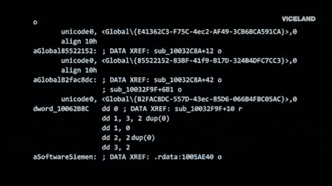
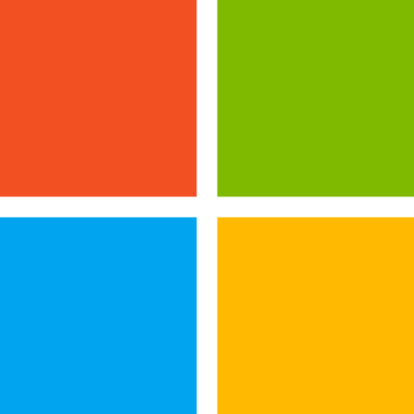

Windows Defender - Security Alert
お客様のシステムは、セキュリティ上の理由から
アクセスが禁止されています。
---------------------------------------------
お使いのコンピュータは、トロイの木馬スパイウェアに
感染していることを警告しています。
また、この問題により以下の個人的な日付が
ハッカーに送信された可能性があります。
---------------------------------------------
・クレジットカード情報
・銀行口座の情報
・メールアドレスおよびパスワード
---------------------------------------------
このウィンドウを閉じないでください。ウィンドウを
閉じると、個人情報が危険にさらされ、
Windowsの登録が中断されます。


☎ 直接お電話ください
(0810)-114-514
Windows Defender SmartScreen は、認識されないアプリケーションの表示を防止するようになりました。システムが危険にさらされる可能性があります。 Windows Defender スキャンにより、パスワード、オンライン ID、財務情報、個人ファイル、写真、ドキュメントを盗む可能性のあるアドウェアがこのデバイス上で見つかりました。